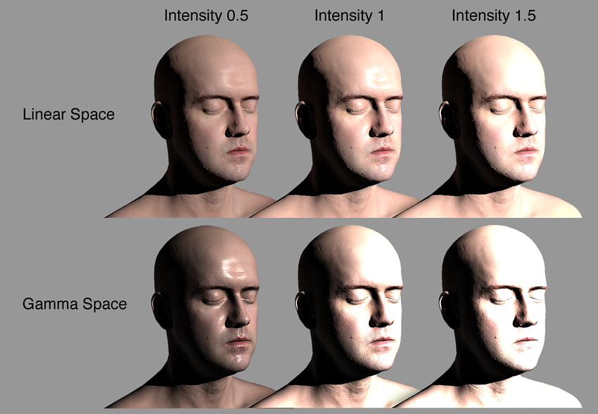
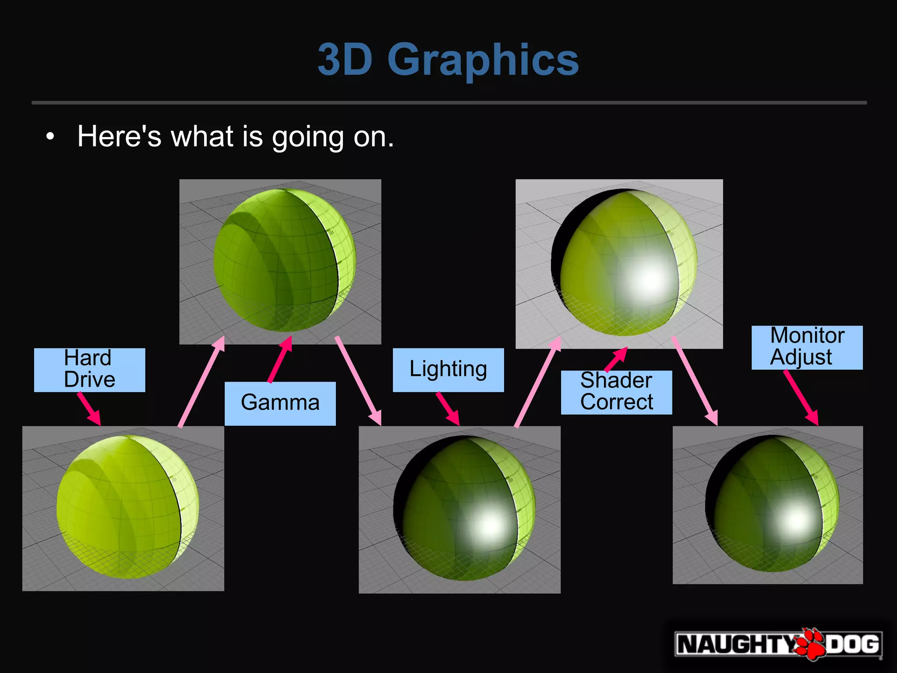
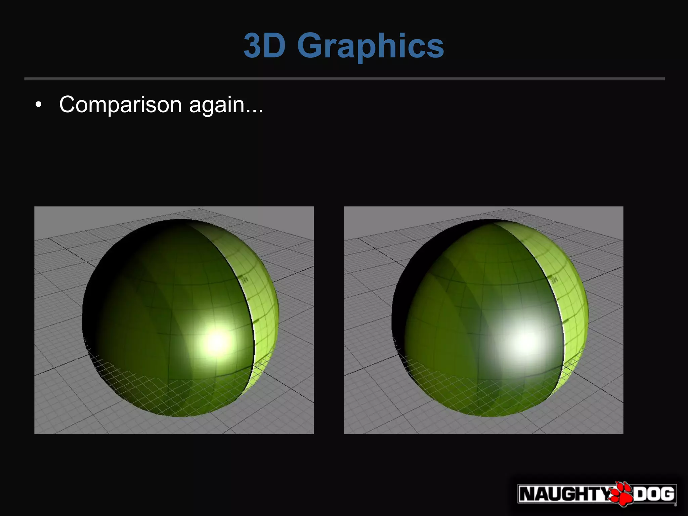

Linear / Gamma
Unity에는 Gamma와 Linear를 선택할 수 있는 Color Space항목이 있다.
Edit> Project Settings> Player> Other Settings> Rendering> Color Space

Gamma / Linear Color Space 결과물 차이
일단 차이부터 알아보자.


- 감마 색 공간에서의 블렌딩은 결과적으로 채도와 밝기가 과도하게 높습니다
이러한 조명 강도, 블렌딩 차이는 왜 생기는 것일까?
Gamma와 Linear의 관계
같은 RGB값이라도 Linear와 Gamma상태에서 보여지는 색이 다르다.

- 감마 보정(wiki: Gamma correction)
Gamma Encode/Decode
Linear는 무엇이고 Gamma는 무엇인가?

| 선 | Gamma | Gamma Value | 공간 |
|---|---|---|---|
| 초록-위 | encode | pow(x, 0.45) (0.45 == 1/2.2) | |
| 검정-가운데 | - | pow(x, 1.0 ) | Linear |
| 빨강-아래 | decode | pow(x, 2.2 ) | Gamma / sRGB / CRT |
- wiki: sRGB : standard RGB color space.
Gamma / Linear Color Space 작업 환경
Linear와 Gamma가 왜 작업 결과물에 영향을 주는가?

- Gamma Pipeline에서는 빛의 연산 결과가 Linear환경에서 연산되고 모니터에는 Gamam가 적용된 상태로 표시된다.
- 빛의 연산 결과도 Linear환경으로 표시하려면, 모니터에 Gamma가 적용되어 어두워지기전에, 미리 밝게해두면 Linear한 빛의 연산 결과를 모니터에서 확인할 수 있게 된다.
이미지 제작 환경(감마 보정 환경)
| 환경 | Gamma correction | 설명 |
|---|---|---|
| 포토샵 | 편집시 decode(2.2) / 저장시 (1) | 포토샵 기본셋팅시: 편집(모니터 Gamma환경) / 저장(모니터 Gamma환경이 아닌 원래 그대로) |
| 셰이더 | 1 | 셰이더 계산은 Linear 환경이다 |
| 모니터 | decode(2.2) |
Rendering - Gamma Color Space
| 연산 | pow(0.5, x) | 값 |
|---|---|---|
| encode | pow(0.5, 0.45) | 0.7 (0.7320428479728127) |
| - | pow(0.5, 1) | 0.5 |
| decode | pow(0.5, 2.2) | 0.2 (0.217637640824031) |
| 환경 | 연산 | 텍스쳐 | 셰이딩 | |
|---|---|---|---|---|
| 모니터(포토샵) | decode | 0.2 | ||
| 저장 | encode | 0.5 | 포토샵 컬러 이미지 파일 | |
| 셰이더(모델) | - | 0.5 | 0.5 | 이미지가 밝아진 상태에서 연산 |
| 모니터(게임) | decode | 0.2 | 0.2 |
- 문제점
- 광원 감쇠
- 감마 파이프라인에서는 셰이더 연산이 어둡게 보임.(셰이딩 값 참조)
- 광원 강도 반응
- 광원의 강도에 따라 선형적이 아닌 비 선형적으로 밝아지거나 어두워진다.
- 블렌딩
- 채도와 밝기가 과도하게 높아질 수 있음.
- 광원 감쇠
Rendering - Linear Color Space
- Gamma Correction
- Gamma를 1.0으로 하는게 Gamma Correction이라고 하는 인터넷 문서들이 있는데, 그렇게 이해하면 안됨.
- Wiki에는 Gamma Correction 자체가 Gamma 연산을 하는 걸로 정의되어 있음.
- 게임에서는 출력장치로 출력하기 좋게 Gamma를 보정하는 작업을 Gamma Correction이라 칭하는게 좀 더 게임개발에 알맞음.
- 모니터로 출력시 어둡게 출력되는데, 출력 전에 밝게 후보정하는 작업.
sRGB 보정
- sRGB 체크시 RGB채널에 대한 Gamma Decode을 수행시(단, A채널은 그대로).
- alpha에 대해선 체크 여부에 상관없이 decode적용 안함.
- 남는 alpha채널에 Mask맵 같은걸 찡겨 넣을 수 있음.
- 다만, 게임에서의 리니어 알파가 포토샵같이 비선형의 알파가 다름으로써 UI 알파블렌딩에서 문제가 됨.
- UI의 알파처리는 따로 처리해줘야 함.
| 환경 | 연산 | 텍스쳐 | 셰이딩 | |
|---|---|---|---|---|
| 모니터(포토샵) | decode | 0.2 | ||
| 저장 | encode | 0.5 | 포토샵 컬러 이미지 파일 | |
| sRGB옵션 | decode | 0.2 | sRGB Check시 (Gamma decode적용) | |
| 셰이더(모델) | - | 0.2 | 0.5 | 이미지가 작업 환경과 동일한 환경에서 연산 |
| 셰이더(포스트프로세스) | encode | 0.5 | 0.7 | 디스플레이에 보여주기 전에 최종 후처리 |
| 모니터(게임) | decode | 0.2 | 0.5 |
sRGB 미보정
- 컬러 텍스쳐를 sRGB 체크를 하지 않으면, 색이 떠보이게됨.
- ORM
- Normal 텍스쳐는 수치 그 자체이므로 sRGB옵션 자체가 없음.
- Roughness/Occlusion는 sRGB 체크를 해지해야함.
- 기타 수치 텍스쳐
- flowmap 등등...
| 환경 | 연산 | 텍스쳐 | 셰이딩 | |
|---|---|---|---|---|
| 저장 | encode | 0.5 | 이미지 파일 | |
| 셰이더(모델) | - | 0.5 | 0.5 | |
| 셰이더(포스트프로세스) | encode | 0.7 | 0.7 | 디스플레이에 보여주기 전에 최종 후처리 |
| 모니터(게임) | decode | 0.5 | 0.5 |
종합

| step | 환경 | 텍스쳐 | 셰이딩 |
|---|---|---|---|
| 모니터(포토샵) | 0.2 | ||
| Hard Drive | 저장 | 0.5 | |
| Lighting | 셰이더(모델) | 0.5 | 0.5 |
| Screen | 모니터(게임) | 0.2 | 0.2 |

| Step | 환경 | 텍스쳐 | 셰이딩 |
|---|---|---|---|
| 모니터(포토샵) | 0.2 | ||
| Hard Drive | 저장 | 0.5 | |
| Gamma | sRGB옵션 | 0.2 | |
| Lighting | 셰이더(모델) | 0.2 | 0.5 |
| Shader Correct | 셰이더(포스트프로세스) | 0.5 | 0.7 |
| Monitor Adjust | 모니터(게임) | 0.2 | 0.5 |

좌 감마 // 우 리니어
Linear Color Space에서 작업시 주의할 점
- 플렛폼 지원
- sRGB로 보정이 필요한 텍스쳐 구분
- UI 텍스쳐의 Alpha값
플렛폼 지원
-
OpenGL ES 2.0 이하는 Gamma만 지원.
-
Linear를 위한 모바일 최소 사양
| platform | version | API |
|---|---|---|
| Android | Android 4.3 / API level 18 / Jelly Bean | OpenGL ES 3.0 / Vulkan |
| iOS | 8.0 | Metal |
sRGB로 보정이 필요한 텍스쳐 구분

- 데이터를 그대로 다루는것은 Linear로
- 나머지 Albedo / Emmission는 sRGB 체크로 Gamma Decode 하도록
| Image | sRGB 체크 | |
|---|---|---|
| Albedo | O | Gamma Decode 적용 |
| Albedo + Smoothness(alpha) | O | sRGB는 RGB값에만 적용. Alpha는 미적용. |
| DataTexture | X | 데이터 그대로 사용 |
| NormalMap | 옵션없음 | 데이터 그대로 사용 |
UI 텍스쳐의 Alpha값
- Linear환경으로 보다 풍부한 표현력을 얻었지만, UI색상의 알파블랜딩이 제대로 되지 않는 현상이 있다.
- Linear개념으로 보면 정확한 계산이지만, 포토샵 작업자 관점에서는 아니다.
- sRGB옵션은 RGB에만 영향을 줌으로, Alpha를 처리함에 있어 추가 작업을 해 주어야 한다.

몇가지 방법이 있다
- 포토샵 강제 설정하거나...
- UI카메라와 SRP의 활용하거나..
Photoshop 설정
- 처음부터 Linear로 저장시켜버리자
- 포토샵 Color Settings > Advanced > Blend RPG Colors Using Gamma: 1.00
- 작업비용
- 디자이너들은 작업하기 불편...
- 프로그래머의 추가 작업 불필요.
UI카메라 + SRP
- UI카메라를 따로 두어서 UI Alpha에 미리 감마를 적용시켜주자.
- 그리고 Game카메라와 잘 섞어주자.
- UITexture sRPG해제
- sRGB상태 데이터 그대로 쓰고 Alpha만 어떻게 잘 처리할 것이다.
- Main Camera
- Camera> Rendering> Culling Mask> Uncheck UI
- UI Camera
- Camera> Render Type> OverLay
- Camera> Rendering> Renderer> GameUIFix
- Camera> Rendering> Culling Mask> UI
- UI Canvas
- Canvas> Render Camera> UI Camera
- PipelineAsset 설정
- _CameraColorTexture를 활용: Quality> Anti Aliasing (MSAA)> 2x 이상
- RenderFeature 작성
- Game 카메라(Linear공간)를 Gamma 공간으로 변환
- 변환된 Game카메라의 출력결과 + UI카메라 출력결과
- 합친 결과(Gamma Space)를 Linear Space로 변경시켜주기
- 새로운 Renderer 추가와 작성한 Feature추가
- General> Renderer List> Add Last GammaUIFix

// _CameraColorTexture 활성화는 PipelineAsset> Quality> Anti Aliasing (MSAA)> 2x 이상으로 하면 됨.
// 1. DrawUIIntoRTPass
// cmd.SetRenderTarget(UIRenderTargetID);
// cmd.ClearRenderTarget(clearDepth: true, clearColor: true, Color.clear);
// 2. BlitPass
// cmd.Blit(DrawUIIntoRTPass.UIRenderTargetID, _colorHandle, _material);
float4 uiColor = SAMPLE_TEXTURE2D(_MainTex, sampler_MainTex, i.uv);
uiColor.a = LinearToGamma22(uiColor.a);
float4 mainColor = SAMPLE_TEXTURE2D(_CameraColorTexture, sampler_CameraColorTexture, i.uv);
mainColor.rgb = LinearToGamma22(mainColor.rgb);
float4 finalColor;
finalColor.rgb = lerp(mainColor.rgb, uiColor.rgb, uiColor.a);
finalColor.rgb = Gamma22ToLinear(finalColor.rgb);
finalColor.a = 1;
Ref
- [GDC2010] GDCValue: Uncharted-2-HDR
- slideshare: Lighting Shading by John Hable
- 정종필 linear/gamma 설명
- 정종필님의 설명 볼때 주의점
- 텍스쳐와 빛의 연산을 뚜렸히 분리하여 설명하지 않고, 리니어라는 것을 강조하기 위해 그래프를 옆에두고 설명함
- 처음에는 이미지가 다른 걸 보고 아 그렇구나 해서 이해한것으로 착각하기 쉬운데, 텍스쳐와 빛의 연산을 분리하지 않고 설명해서 나중에 더 햇갈릴 수 있음.
- Uncharted-2-HDR를 확인 할것.
- 정종필 - Gamma Color space와 Linear Color space란?
- 정종필 - 라이팅과 셰이더에서 연산을 위한 선형 파이프라인
- 정종필 - 유니티 셰이더에서 sRGB/Linear 사용 및 응용
- 정종필님의 설명 볼때 주의점
- GPU Gems 3 - Chapter 24. The Importance of Being Linear
- Article - Gamma and Linear Spaces
- [데브루키] Color space gamma correction
- 선형(Linear) 렌더링에서의 UI 작업할때 요령
- 201205 Unity Linear color space에서 UI의 alpha 값이 바뀌는 문제에 대하여..
- 3D scene need Linear but UI need Gamma
- https://nbertoa.wordpress.com/2016/06/20/gamma-correction/